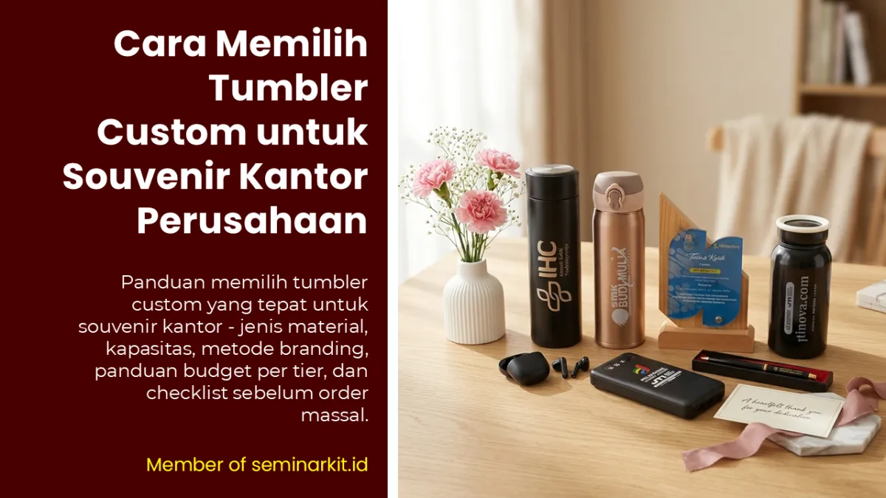
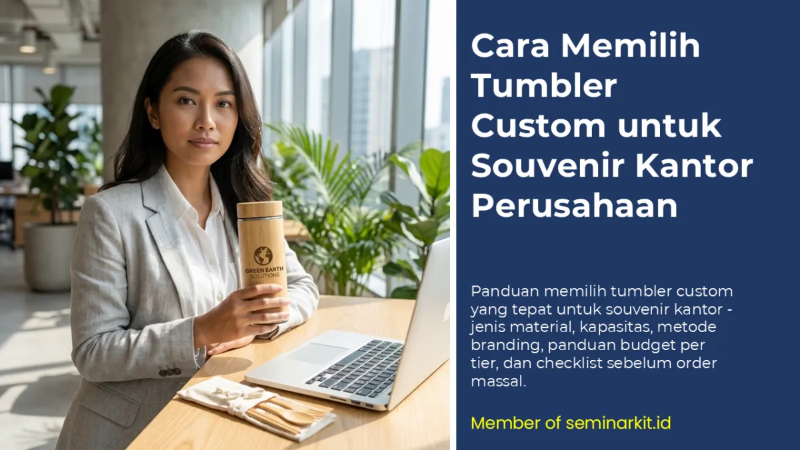

Tumbler custom adalah salah satu pilihan souvenir kantor paling populer di Indonesia — dan bukan tanpa alasan. Dari semua kategori merchandise perusahaan, tumbler adalah item yang paling sering digunakan dalam kehidupan sehari-hari, paling tahan lama, dan paling konsisten membawa logo brand ke mana pun pemiliknya pergi.
Tapi justru karena popularitasnya yang tinggi itulah, banyak perusahaan yang terjebak memilih tumbler dengan sembarangan — tergiur harga murah tanpa mempertimbangkan kualitas, atau memilih desain yang kurang sesuai dengan profil penerima. Hasilnya: tumbler berlogo perusahaan yang tersimpan di lemari, tidak pernah dipakai, dan gagal menjalankan fungsi utamanya sebagai media branding jangka panjang.
Artikel ini adalah panduan lengkap memilih tumbler custom yang tepat untuk berbagai program souvenir kantor perusahaan — dari seminar kit, onboarding kit karyawan, corporate gift, hingga hampers branded.
Mengapa Tumbler adalah Souvenir Kantor yang Paling Efektif?
Sebelum membahas cara memilih, penting untuk memahami mengapa tumbler layak mendapat perhatian serius dalam program souvenir perusahaan Anda.
1. Nilai Pakai Harian yang Tinggi
Tumbler digunakan rata-rata 1–3 kali per hari oleh penggunanya. Setiap kali dipakai, logo perusahaan Anda "tampil" di hadapan pemiliknya dan orang-orang di sekitarnya — di meja kerja, di gym, di perjalanan, di kafe. Tidak ada media promosi lain dengan frekuensi impresi setinggi ini pada biaya serendah ini.
2. Umur Pakai yang Panjang
Tumbler berkualitas baik bisa bertahan 2–5 tahun atau lebih. Bandingkan dengan flyer yang dibuang dalam hitungan hari atau kaos yang kusam setelah beberapa cuci. ROI branding tumbler jauh lebih tinggi per rupiah yang diinvestasikan.
3. Relevansi dengan Gaya Hidup Modern
Tren hidup sehat, pengurangan sampah plastik, dan budaya bekerja dari mana saja membuat tumbler semakin relevan. Penerima yang mendapat tumbler berkualitas akan benar-benar memakainya — bukan hanya menyimpannya.
4. Fleksibilitas Penggunaan
Tumbler bisa menjadi bagian dari hampir semua program souvenir korporat: seminar kit, onboarding kit, corporate gift, hampers, atau standalone merchandise. Ini menjadikannya investasi pengadaan yang paling serbaguna.
Jenis-Jenis Tumbler untuk Souvenir Kantor
Tidak semua tumbler diciptakan sama. Memahami jenis-jenisnya akan membantu Anda memilih yang paling sesuai dengan kebutuhan dan budget.
1. Tumbler Stainless Steel (Double Wall / Vacuum Insulated)
Ini adalah kategori premium yang paling populer untuk corporate gifting. Konstruksi double-wall dengan vacuum insulation mampu mempertahankan suhu minuman hingga 12 jam dingin atau 6 jam panas.
Karakteristik:
- Material: Stainless steel 304 food grade (interior dan eksterior)
- Kapasitas populer: 350ml, 500ml, 600ml
- Berat: 200–350 gram
- Keunggulan: Tahan lama, bebas BPA, menjaga suhu minuman, tidak berkarat
- Metode branding: Laser engraving (paling premium), sablon, atau epoxy print
- Harga: Rp 50.000 – Rp 200.000+ per unit (tergantung merek dan spesifikasi)
- Cocok untuk: Corporate gift, onboarding kit premium, hampers branded
Yang perlu dicek saat memilih stainless tumbler:
- Ketebalan dinding: minimal 0.8mm untuk eksterior dan 0.6mm untuk interior
- Kualitas seal/gasket penutup — ini yang paling sering bocor pada tumbler murah
- Pastikan ada sertifikasi food grade pada material yang digunakan
2. Tumbler Plastik BPA-Free
Alternatif yang lebih ringan dan ekonomis. Cocok untuk event massal, seminar kit skala besar, atau program yang mengutamakan volume.
Karakteristik:
- Material: Tritan, PP, atau AS plastic (BPA-free)
- Kapasitas populer: 500ml, 600ml, 700ml
- Berat: 100–200 gram
- Keunggulan: Lebih ringan, lebih murah, tersedia dalam banyak warna cerah
- Metode branding: Sablon satu warna, full print, atau heat transfer
- Harga: Rp 15.000 – Rp 60.000 per unit
- Cocok untuk: Seminar kit, event outdoor, gathering karyawan massal
Yang perlu dicek:
- Pastikan ada keterangan "BPA Free" pada produk — ini tidak opsional untuk produk minuman
- Uji ketahanan terhadap air panas (jika peserta akan mengisi dengan kopi atau teh)
- Kualitas tutup dan seal — hindari yang mudah kendur
3. Tumbler Kaca (Glass Tumbler)
Kategori yang semakin populer karena kesan elegan dan ramah lingkungan. Biasanya dilengkapi sleeve silikon atau neoprene untuk perlindungan.
Karakteristik:
- Material: Borosilicate glass (tahan panas dan benturan lebih baik dari kaca biasa)
- Kapasitas populer: 350ml, 400ml, 500ml
- Keunggulan: Estetika premium, tidak menyerap bau, mudah dibersihkan
- Kelemahan: Lebih berat, risiko pecah dalam pengiriman
- Metode branding: Sablon UV, etching, atau cetak pada sleeve
- Harga: Rp 40.000 – Rp 150.000 per unit
- Cocok untuk: Corporate gift eksklusif, hampers premium, gift untuk direksi dan klien VIP
Catatan penting pengiriman: Tumbler kaca memerlukan packaging khusus (bubble wrap + box individual) untuk pengiriman aman. Hitung biaya packaging tambahan ini dalam total budget.
4. Tumbler Bambu / Eco-Friendly
Pilihan yang tepat untuk perusahaan yang ingin menonjolkan komitmen lingkungan. Material bambu atau gabus alam memberikan estetika natural yang unik.
Karakteristik:
- Material: Bambu (eksterior) dengan stainless atau plastik BPA-free (interior)
- Keunggulan: Ramah lingkungan, estetika unik, cocok untuk segmen premium
- Metode branding: Laser engraving (paling cocok untuk material bambu)
- Harga: Rp 60.000 – Rp 180.000 per unit
- Cocok untuk: Corporate gift tier premium, program CSR, gift untuk klien yang peduli lingkungan

Faktor Utama dalam Memilih Tumbler Custom
Setelah memahami jenis-jenisnya, gunakan faktor-faktor berikut sebagai panduan evaluasi:
Faktor 1: Profil Penerima
Ini adalah faktor nomor satu yang harus menentukan pilihan Anda. Tanyakan:
- Apakah penerima lebih banyak di kantor atau aktif di luar ruangan?
- Apakah mereka lebih sering minum air dingin atau panas?
- Apa rentang usia dan gaya hidup mereka?
- Apakah ini untuk atasan/klien VIP atau karyawan umum?
Contoh praktis:
- Tim sales yang banyak di lapangan → Tumbler stainless insulated 600ml (perlu menjaga minuman tetap dingin lama)
- Karyawan kantor yang bekerja di depan laptop → Tumbler kaca 350ml dengan estetika premium untuk di meja kerja
- Peserta seminar 500 orang → Tumbler plastik BPA-free 500ml yang ringan dan warna cerah
Faktor 2: Kapasitas
Pilih kapasitas yang benar-benar digunakan, bukan yang terbesar:
| Kapasitas | Cocok Untuk |
|---|---|
| 250–300ml | Minum kopi atau teh, espresso lovers |
| 350–400ml | Penggunaan standar harian di kantor |
| 500ml | Most popular — serbaguna untuk semua kebutuhan |
| 600–750ml | Aktif bergerak, olahraga, long travel |
| 1 liter+ | Outdoor, hiking, event olahraga |
Faktor 3: Metode Branding
Metode branding menentukan tampilan akhir logo perusahaan Anda di tumbler. Pilih yang sesuai dengan jenis material:
Laser Engraving
- Cocok untuk: Stainless steel, bambu, kulit
- Hasil: Logo terukir permanen, tidak akan luntur
- Kesan: Premium, elegan, profesional
- Keterbatasan: Umumnya satu warna (silver/hitam dari warna material)
Sablon (Screen Printing)
- Cocok untuk: Plastik, stainless (eksterior)
- Hasil: Bisa full color, area cetak luas
- Kesan: Standar merchandise
- Keterbatasan: Bisa pudar jika sering dicuci dengan deterjen keras
UV Print / Digital Print
- Cocok untuk: Permukaan datar (plastik, stainless dengan finish matte)
- Hasil: Detail tinggi, bisa foto atau gradasi warna
- Kesan: Modern dan detail
- Keterbatasan: Kurang tahan untuk produk yang sering terkena gesekan
Epoxy / Emboss
- Cocok untuk: Logo yang ingin tampil timbul/3D
- Kesan: Sangat premium
- Biaya: Paling tinggi di antara opsi lainnya
Faktor 4: Kualitas Seal dan Tutup
Ini adalah bagian yang paling sering diabaikan dan paling sering menjadi sumber komplain. Tumbler yang bocor adalah kegagalan total — tidak peduli seindah apa desainnya.
Sebelum melakukan order massal, wajib lakukan uji seal:
- Isi tumbler dengan air penuh
- Tutup rapat, lalu balikkan selama 30 detik
- Kocok beberapa kali
- Periksa apakah ada tetesan air di luar
Lakukan ini pada sample yang diterima sebelum approval produksi massal.
Faktor 5: Food Safety Certification
Untuk produk yang berkontak langsung dengan minuman, pastikan material yang digunakan sudah tersertifikasi food grade. Tanyakan kepada vendor:
- Apakah material stainless menggunakan grade 304 atau 316?
- Apakah plastik yang digunakan sudah BPA-free?
- Apakah cat/tinta branding yang digunakan food safe?
Panduan Budget Tumbler Custom per Tier
| Tier | Harga per Unit | Material | Cocok Untuk |
|---|---|---|---|
| Ekonomis | Rp 15.000 – Rp 35.000 | Plastik BPA-free | Seminar kit massal, event 500+ pax |
| Standar | Rp 35.000 – Rp 75.000 | Plastik premium / stainless entry | Gathering karyawan, seminar 100–500 pax |
| Mid-Range | Rp 75.000 – Rp 150.000 | Stainless double wall | Onboarding kit, merchandise reguler |
| Premium | Rp 150.000 – Rp 300.000 | Stainless premium / kaca / bambu | Corporate gift, hampers branded |
| Eksklusif | Rp 300.000 ke atas | Branded internasional, material khusus | Gift untuk klien VIP, direksi |

Checklist Pemesanan Tumbler Custom
Gunakan checklist ini sebelum konfirmasi order ke vendor:
- Jenis material sudah ditentukan (stainless / plastik / kaca / bambu)
- Kapasitas sudah sesuai profil penerima
- Warna tumbler sudah dipilih (sesuai brand guideline perusahaan)
- Metode branding sudah ditentukan dan dipahami hasilnya
- File logo sudah dalam format vector (AI, EPS, atau PDF) beresolusi tinggi
- Sample fisik sudah diterima dan disetujui (termasuk uji seal)
- MOQ minimum sudah dipenuhi
- Kemasan individual (box atau sleeve) sudah ditentukan
- Timeline produksi dan pengiriman sudah disepakati
- Sertifikasi food grade sudah dikonfirmasi
Kesalahan Umum Saat Memesan Tumbler Custom
1. Memilih berdasarkan harga saja Tumbler murah yang bocor atau catnya mengelupas akan merusak reputasi program souvenir Anda. Selalu minta sample fisik sebelum order massal.
2. Mengirim file logo dengan resolusi rendah Logo blur atau pixelated di tumbler terlihat tidak profesional. Pastikan file dalam format vector atau resolusi minimal 300 dpi.
3. Tidak memperhitungkan biaya kemasan Terutama untuk tumbler kaca atau produk premium, biaya box individual dan bubble wrap bisa menambah 10–20% dari total biaya.
4. Order mendadak Untuk order di atas 500 pcs, lead time produksi umumnya 7–14 hari kerja. Order mendadak biasanya menghasilkan kualitas yang lebih rendah atau harga yang lebih tinggi.
5. Tidak memeriksa kapasitas aktual Beberapa vendor mencantumkan kapasitas nominal yang berbeda dengan kapasitas aktual terisi. Selalu konfirmasi kapasitas terisi (bukan kapasitas nominal) saat memesan.

Banner promosi: klik gambar untuk langsung terhubung ke WhatsApp tim sales.
Kesimpulan
Tumbler custom yang tepat adalah investasi souvenir kantor yang memberikan nilai branding paling panjang dan konsisten di antara semua pilihan merchandise. Kuncinya ada pada kesesuaian material dengan profil penerima, kualitas seal yang tidak bocor, metode branding yang sesuai, dan — yang paling penting — tidak mengorbankan kualitas demi harga paling murah.
Dengan panduan di artikel ini, Anda sudah siap menyusun brief tumbler custom yang detail dan berkomunikasi secara efektif dengan vendor untuk mendapatkan produk terbaik sesuai budget perusahaan Anda.
Anda juga mungkin tertarik dengan artikel-artikel berikut:
- Perbedaan Merchandise, Corporate Gift, dan Hampers — Kapan Menggunakan Masing-masing?
- Panduan Hampers Perusahaan: Produk, Budget, dan Tips Distribusi Massal
- Checklist Seminar Kit yang Wajib Ada untuk Event Korporat
- Onboarding Kit Karyawan Baru: Apa Saja yang Perlu Disertakan?
Cari tumbler custom dengan kualitas terjamin untuk souvenir kantor perusahaan Anda? Vendor Souvenir Kantor menyediakan berbagai pilihan tumbler dari tier ekonomis hingga premium, lengkap dengan layanan custom branding dan pengiriman ke seluruh Indonesia. Konsultasi di vendorsouvenirkantor.web.id atau WhatsApp 0895-6390-68080.
FAQ Seputar Topik Ini
Material tumbler apa yang paling aman untuk corporate gift?
Stainless steel food grade 304 dengan seal berkualitas biasanya paling aman untuk kebutuhan korporat karena awet dan memberi kesan premium.
Apakah tumbler plastik masih layak untuk seminar kit?
Layak selama menggunakan material BPA-free dan kualitas tutupnya baik, terutama untuk event massal dengan target budget efisien.
Mengapa uji kebocoran wajib sebelum order besar?
Karena kegagalan di seal atau tutup adalah sumber komplain terbesar pada tumbler; uji sample menurunkan risiko cacat massal.
Metode branding apa yang paling tahan lama?
Laser engraving biasanya paling tahan lama pada stainless dan memberikan tampilan yang lebih premium untuk penggunaan jangka panjang.